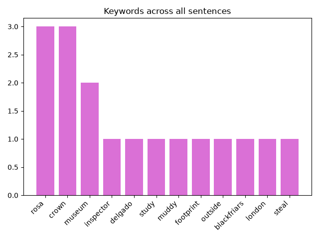
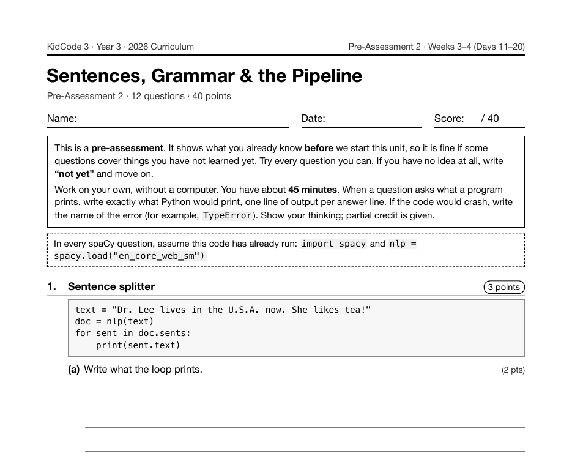

Project 15: Keyword Detective
Keyword Detective is Project 15, across Days 12 and 13 of Year 3. Students tokenize a chapter, drop stop words and punctuation, lemmatize, count with Counter, chart the top keywords, and compare the result with what their Year 2 Book Detective finds on the same text.
What I taught that week
From the Year 3 curriculum, Week 3: Sentences & Grammar
Day 11: Sentences & Spans. Splitting text with doc.sents and working with Span objects such as doc[2:5], including .text, .start, and .end. Comparing spaCy's results with Year 2's .split(".").
Day 12–13: Lab: Keyword Detective. Project 2. Tokenizing a chapter, dropping stop words and punctuation, lemmatizing, counting with Counter, and charting the top keywords. Comparing with Year 2's Book Detective on the same text.
Day 14: Parts of Speech. Nouns, verbs, adjectives, and adverbs, and how spaCy labels them with token.pos_ and token.tag_. Decoding labels with spacy.explain(). Unplugged game: "Human Sentence".
Day 15: Filtering by Part of Speech. Using comprehensions to pull out NOUN, VERB, and ADJ tokens. Finding the most common verbs in a fairy tale and exploring where the model is tricked ("Time flies like an arrow").
What students built
93 students built a keyword detective, the most submissions of any project in the program except KidBot Brain. Every one counts lemmas (token.lemma_) and saves a chart; some also split the chapter sentence by sentence with doc.sents or filter by part of speech.
One student's program
This is one real submission, shown as the student wrote it apart from the removed name header. It was chosen by a fixed rule rather than for being the best: it is the submission closest to the project's median length among those that ran cleanly and contain nothing that could identify anyone. Parts are skipped where marked with …
def year2_keywords(text):
cleaned = text.lower()
for mark in string.punctuation:
cleaned = cleaned.replace(mark, "")
return [w for w in cleaned.split() if w not in STOP_WORDS_Y2]
doc = nlp(CHAPTER)
overall = Counter()
for number, sentence in enumerate(doc.sents, start=1):
lemmas = [t.lemma_.lower() for t in sentence if t.is_alpha and not t.is_stop]
overall.update(lemmas)
print(f"Sentence {number}: {', '.join(lemmas)}")
print()
print("Overall top keywords:")
for word, count in overall.most_common(12):
print(f" {word:<12} {'*' * count}")
year2 = Counter(year2_keywords(CHAPTER))
print()
print("Year 2 top words:", year2.most_common(5))
print("spaCy top words :", overall.most_common(5))
A sample run of that program (the input was typed for this page)
Sentence 1: inspector, rosa, delgado, study, muddy, footprint, outside, blackfriars, museum, london
Sentence 2: steal, jewel, crown, tuesday, night, guard, see
Sentence 3: rosa, follow, print, narrow, bridge, quiet, garden
Sentence 4: find, small, boy, hold, crown, hand
Sentence 5: explain, crown, belong, grandmother, lose, year, ago
Sentence 6: rosa, listen, kindly, museum, agree, share, story, newspaper
Overall top keywords:
rosa ***
crown ***
museum **
inspector *
delgado *
study *
muddy *
footprint *
outside *
blackfriars *
london *
steal *
Year 2 top words: [('rosa', 3), ('crown', 3), ('museum', 2), ('to', 2), ('inspector', 1)]
spaCy top words : [('rosa', 3), ('crown', 3), ('museum', 2), ('inspector', 1), ('delgado', 1)]

The worksheet for this unit
Each unit has a pre- and post-assessment written from the same curriculum. This is the first page of the pre-assessment for the unit this project sits in: Sentences, Grammar & the Pipeline (Weeks 3–4 (Days 11–20), 12 questions).

Where it fits
Parts of speech come right after this, and they drive the next project, Auto Mad Libs.
Looking back
The comparison at the end of the sample run is the point of the project. Counting "lemmas" rather than raw words means "followed" and "follow" are the same keyword, and the Year 2 code has no way to know that.